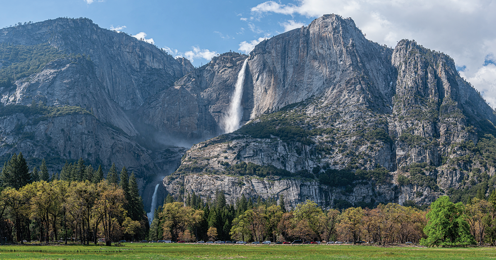
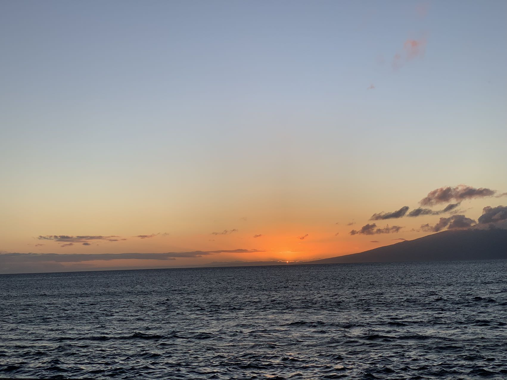
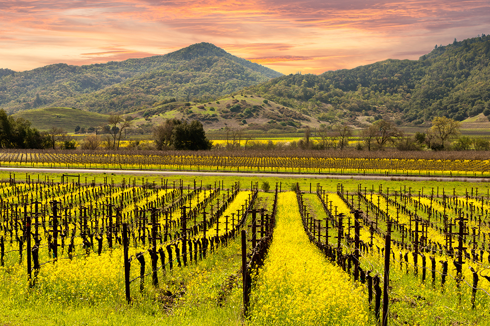

Travel
Yellowstone
Geographical Location: North America
Nestled in the heart of California's Sierra Nevada mountains, Yosemite National Park is a natural wonder that beckons adventurers, nature enthusiasts, and wanderers from around the world. This iconic national park is renowned for its breathtaking landscapes, characterized by towering granite cliffs, cascading waterfalls, and lush alpine meadows. At the center of it all is the magnificent Yosemite Valley, a glacially carved wonder that captivates with its sheer cliffs, most notably El Capitan and Half Dome, which stand as stoic sentinels against the sky.
Yosemite's allure is not limited to its dramatic rock formations; the park boasts some of the most iconic waterfalls on the planet. Bridalveil Fall, Yosemite Falls, and Vernal Fall are just a few of the awe-inspiring cascades that adorn this natural paradise. Beyond its grandeur, Yosemite is a sanctuary for diverse flora and fauna, with ancient sequoia trees, pristine lakes, and meandering rivers adding to the tapestry of life within its borders. Whether you're hiking to the summit of Half Dome, strolling through a serene meadow, or gazing up at the stars in Yosemite's dark night skies, this extraordinary park leaves an indelible mark on the hearts of all who venture into its embrace. Yosemite is not merely a destination; it's a sanctuary where nature's majesty unfolds in every vista, beckoning us to connect with the wild beauty of the world.
Honolulu
Geographical Location: Pacific Ocean
Visiting Honolulu was an adventure that will forever hold a special place in my heart. The moment I set foot on the sun-kissed shores of Waikiki Beach, I was greeted by the gentle lull of the turquoise waves and the warm embrace of the Hawaiian sun. Each day brought a new chapter of exploration, from hiking to the summit of Diamond Head, where panoramic views painted a breathtaking portrait of the island, to savoring local delicacies like poke bowls and malasadas that tantalized my taste buds. Honolulu's vibrant culture and the spirit of aloha welcomed me with open arms, making it a journey filled with unforgettable memories.
As the sun dipped below the horizon, the island transformed into a paradise of twinkling lights and starlit skies. Honolulu's nightlife came alive with the beats of hula performances and the melodies of ukuleles, inviting me to dance to the rhythm of the islands. Whether it was the historic Pearl Harbor, the lush beauty of Hanauma Bay, or the tranquil moments spent under swaying palm trees, my Honolulu trip was a tapestry of experiences that left me with a deep sense of gratitude for the enchanting island of Oahu. Aloha, Honolulu, until we meet again.
Maui Island

Geographical Location: Pacific Ocean
My Maui Island adventure was a mesmerizing journey through a tropical paradise. From the moment I stepped onto the island, I was greeted by the warm embrace of the Hawaiian sun and the scent of plumeria blossoms carried by the gentle breeze. Maui's diverse landscapes left me in awe, from the lush, rolling hills of Upcountry to the dramatic volcanic landscapes of Haleakalā National Park. Watching the sunrise from the summit of Haleakalā was a spiritual experience, as the colors of dawn painted the sky in a breathtaking display of nature's artistry. Snorkeling in the crystal-clear waters of Molokini Crater, I was welcomed into an underwater wonderland where vibrant coral reefs and exotic marine life danced beneath the surface.
Maui's vibrant culture and the spirit of aloha were evident in every encounter, from the friendly locals sharing tales of island life to the mesmerizing hula performances that celebrated Hawaii's rich heritage. My Maui journey was a tapestry of moments, from savoring freshly caught seafood at local fish markets to chasing waterfalls on the Road to Hana, leaving me with memories that will forever resonate in my heart. Maui, you are a jewel in the Pacific, and I am forever grateful for the beauty, adventure, and serenity you bestowed upon me during my unforgettable island escape. Aloha, Maui, until we meet again.
Pittsburg

Geographical Location: Pacific Ocean
My trip to Pittsburgh, with a visit to the iconic Fallingwater, was an architectural and natural marvel. The journey took me through the picturesque landscapes of Pennsylvania, and upon arriving at Fallingwater, I was immediately struck by Frank Lloyd Wright's genius. The house, seemingly integrated into the natural surroundings, stood as a testament to his vision. Walking through its interiors, I was captivated by the harmony between the man-made structure and the cascading waterfall that enveloped it. It was as if nature and architecture had become one, a symphony of design and environment that left an indelible impression
Beyond Fallingwater, Pittsburgh's vibrant arts and culture scene beckoned, with visits to the Carnegie Museum of Art and the Andy Warhol Museum adding layers of creativity and inspiration to my trip. As I explored the city's neighborhoods and indulged in its culinary delights, I couldn't help but feel a deep appreciation for the rich history and modern vibrancy that define Pittsburgh. My visit to Fallingwater and the city itself was a delightful fusion of art, architecture, and culture, leaving me with a renewed sense of wonder and admiration for this captivating destination.
Napa
Geographical Location: North America
Napa Valley, located in the heart of California's wine country, is a world-renowned destination for wine enthusiasts and travelers seeking a taste of the good life. This picturesque region is celebrated for its rolling vineyard-covered hills, where rows of grapevines stretch as far as the eye can see. Napa is home to some of the finest wineries and vineyards, each offering a unique opportunity to savor exquisite wines, take guided tours, and learn about the winemaking process. Beyond wine, Napa's culinary scene is equally exceptional, with farm-to-table restaurants, Michelin-starred dining establishments, and gourmet food markets that delight foodies from all corners of the globe. Visitors can also explore charming towns like Yountville, St. Helena, and Calistoga, where quaint boutiques, art galleries, and luxurious spas await, ensuring that Napa offers an unforgettable blend of flavors, culture, and relaxation.
But Napa's appeal extends far beyond its culinary and oenophilic delights. The region boasts breathtaking natural beauty, with the Napa River winding its way through lush landscapes. Hiking and biking trails, such as the Napa Valley Vine Trail, offer the chance to soak in the stunning scenery while enjoying outdoor activities. Napa is a place where vineyard picnics, hot air balloon rides over vineyards at sunrise, and leisurely wine train journeys are the norm, making it a haven for those seeking a harmonious blend of relaxation and indulgence. Whether you're a wine aficionado or simply a lover of life's pleasures, Napa Valley is a destination that promises an unforgettable journey through the art of winemaking, culinary excellence, and the sheer beauty of Northern California's wine country.
Las Vegas

Geographical Location: North America
Las Vegas, often dubbed the "Entertainment Capital of the World," is a city renowned for its extravagant entertainment, world-class casinos, and vibrant nightlife. The iconic Las Vegas Strip showcases a dazzling array of themed resorts, high-end dining, spectacular live shows, and endless opportunities for excitement. Beyond the glitz and glamour, visitors can explore nearby natural wonders like Red Rock Canyon and the Hoover Dam, making Las Vegas a city of both dazzling lights and breathtaking landscapes.
It's a place where luxury and adventure converge, offering an unforgettable tourist experience.